About us:
Dr. S. A. Raja is the Founder Chairman of the Rajas Group of Educational Institutions. He is a well-known multifaceted humanist, educationalist, and spiritualist. He hails from Vadakangulam in Tirunelveli District, Tamilnadu. With his efforts and God's grace, from a humble beginning in 1984, he has built an educational empire that produces world-class Engineers, Managers, Doctors, and Technocrats. A long-cherished dream of our Founder Chairman Dr. S.A. Raja was to establish a premier abode for quality education in Kottayam. His dream was fulfilled by the present Chairman Dr. S.A. Joy Raja M.B.A, Ph.D. (USA) by establishing a school that is truly global yet rooted in our values.
Vision:
To raise a generation who will do the nation proud by being knowledgeable thinkers, generous servers and confident contributors who can bring positive changes in this world.
Mission:
To provide a stimulating learning environment with a technological orientation, which maximizes individual potential and ensures that students of all ability levels are well equipped to meet the challenges of life. We believe that each child is an individual with varying needs.
By fostering a conducive environment full of care and creativity, we are committed to instilling in each student a desire to learn with an emphasis on the social, emotional, physical and intellectual developmental aspects, thereby bestowing the necessary traits such as resilience, adaptability, and knowledge for achieving the highest standards of achievement.
The ethos of The Rajas International School is encapsulated in the acronym GREAT encompassing the following 5 elements:
Growth: | Developing a mindset that encourages exploration and risk-taking. |
Radiance: | Being a beacon that radiates a positive attitude that contributes to building up together. |
Empathy: | Appreciating different perspectives and feelings of others |
Abundance: | Adopting an attitude of giving and sharing with the community. |
Truth: | Cultivating a mind of intellectual curiosity and discernment. |
To Know about [QtPi Robotics] (https://www.qtpi.in/)
- Two students were shortlisted for the District Level of INSPIRE Awards - MANAK (Million Minds Augmenting National Aspirations and Knowledge), being executed by DST with National Innovation Foundation – India guided by QtPi trainers.
- The objective of the scheme is to target one million original ideas/innovations rooted in science and societal applications to foster a culture of creativity and innovative thinking among school children.
- Ajay Jegan, from grade 9 and Ganesh from grade 6, were shortlisted for District Level and bagged 10,000 rupees cash prize
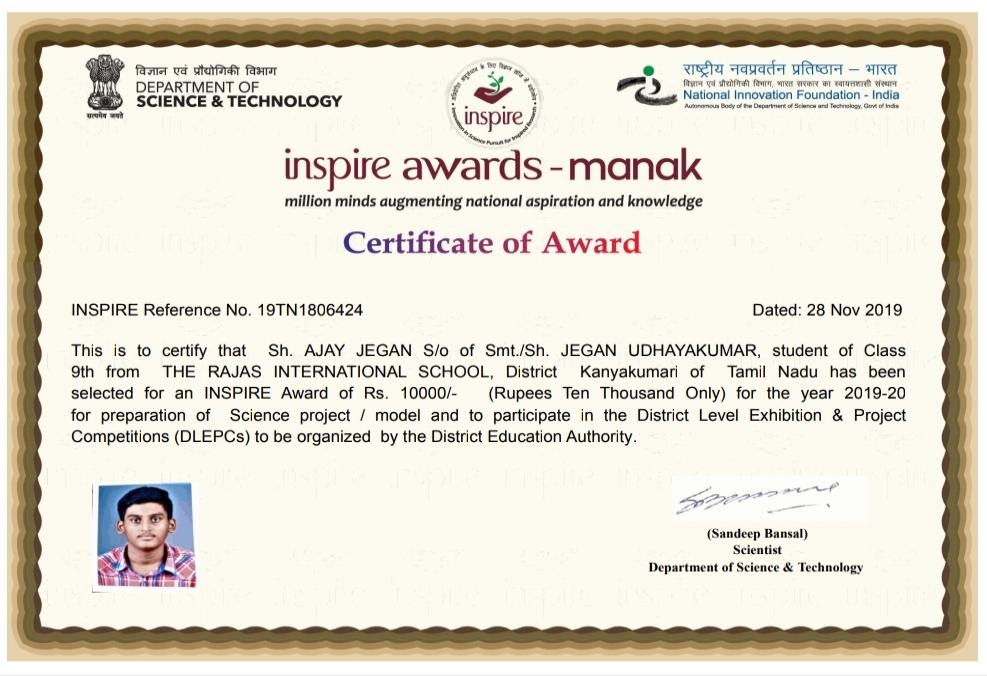 |
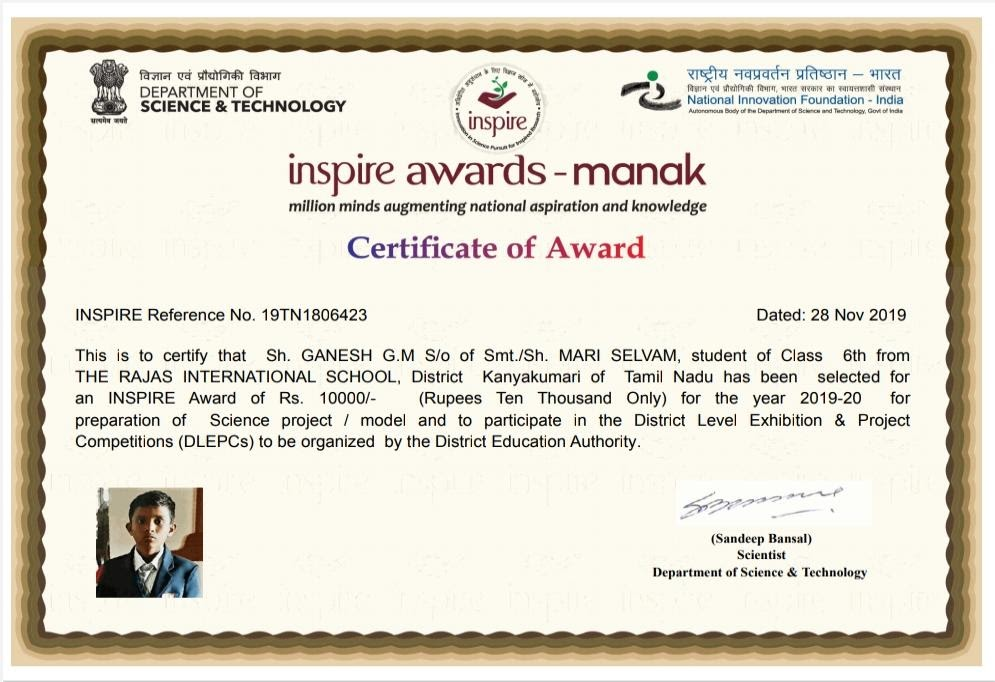 |
.
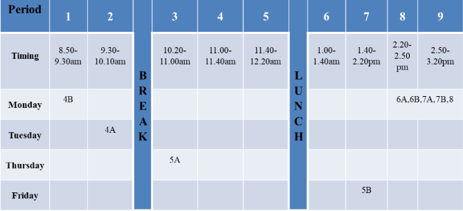
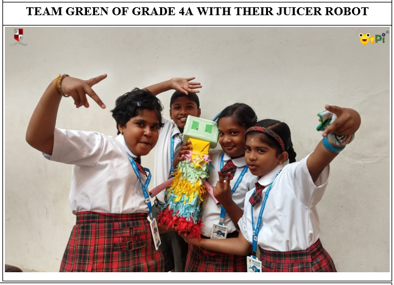
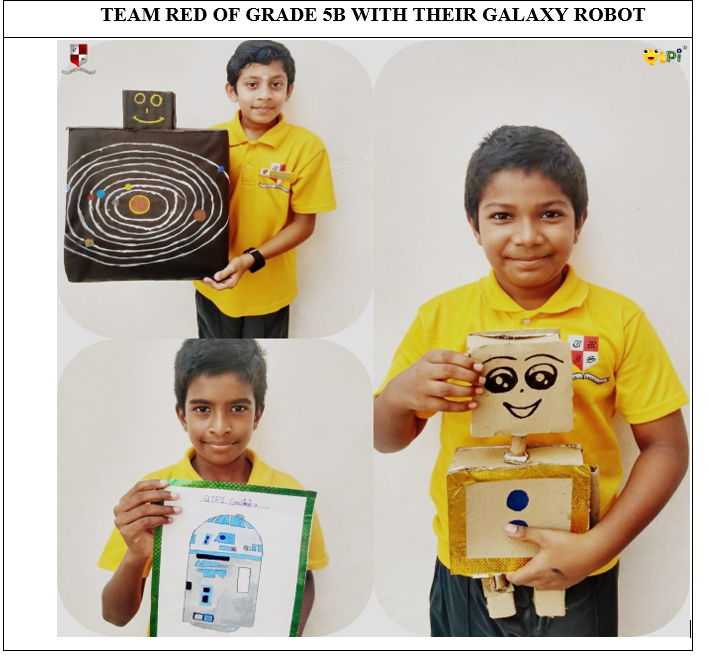
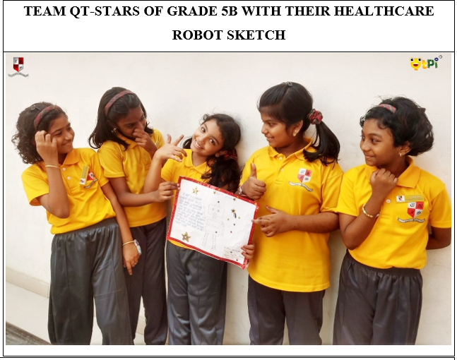
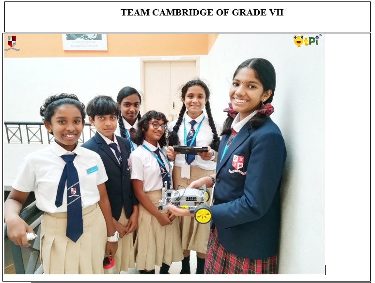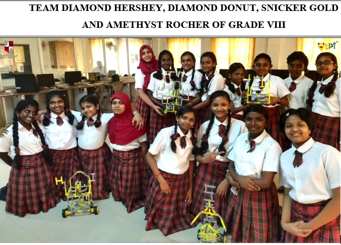
Science Expo was conducted on November 10, of 2018.Students actively exhibited projects , being creative and skilled in their own way. The purpose of the exhibition was to bring out new ideas, magnify their skills and enhance imagination.
There are a lot of Inventions in various fields. In Agriculture , Farmer's Assistant helps the farmers for security purposes and recycling as well.
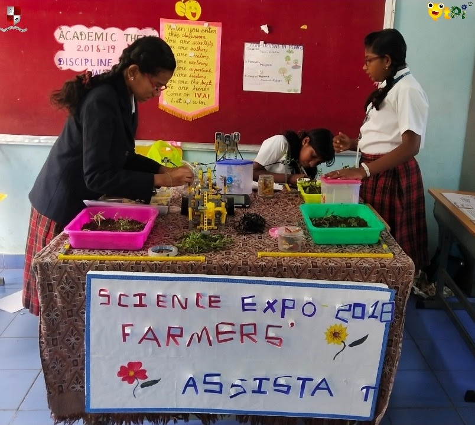
Yet another project exhibited was Home Automation with Voice control, where students automated Fans, Lights and Doors.
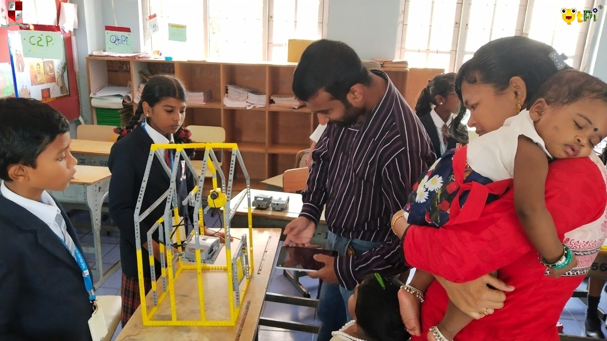
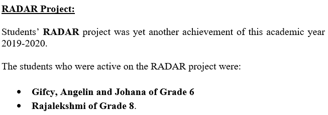
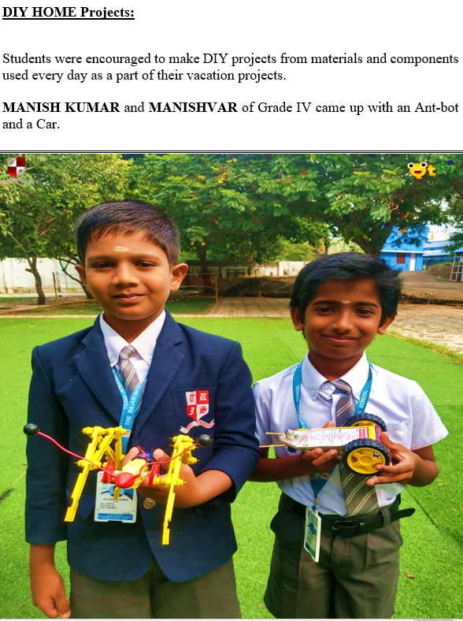
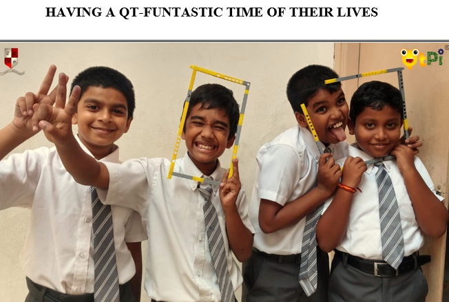
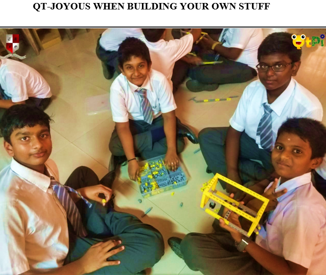
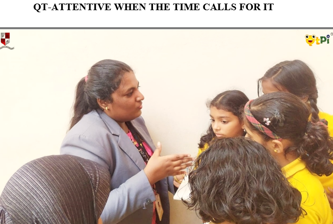
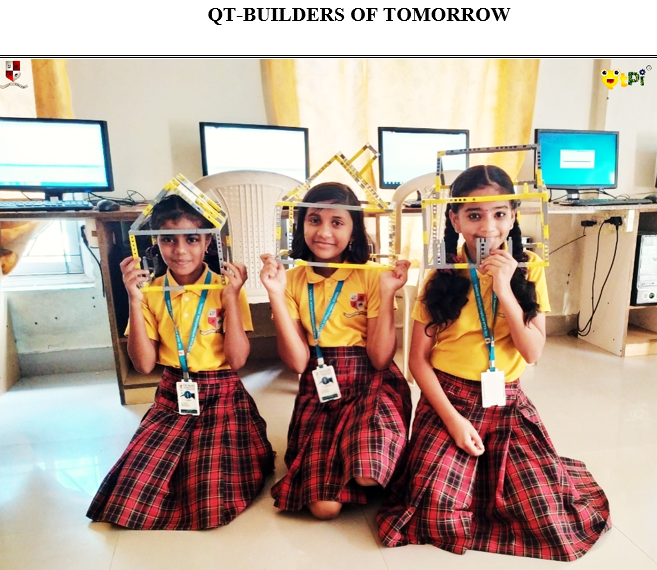

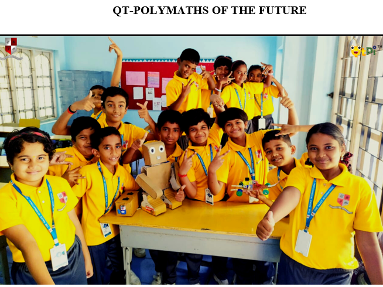
STUDENT FEEDBACK
NAME | PICTURE | QUALIFICATION |
Shelma Sahayam M | B.E.(Computer Science and Engineering) | |
Ancy A | MSc, M.E.(Computer Science) | |
Mary Aux Presly S | BTech( Information Technology) |
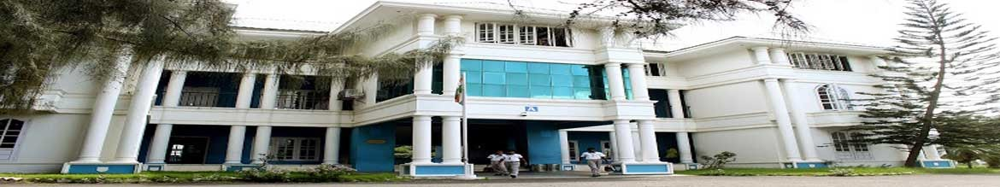
THE RAJAS INTERNATIONAL SCHOOL
 The Rajas International School, Ozhuginasery
The Rajas International School, Ozhuginasery
Nagercoil- 629001 Kanyakumari Dist. Tamil Nadu.
Office : 04652-276365, 277087
Email: principal@tris.in . info@tris.in
Web: www.tris.in
|
|